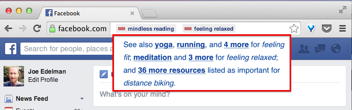
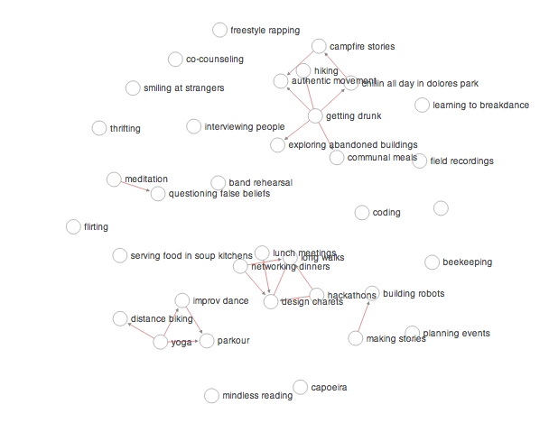

It is high time we had a tech ecosystem--apps, websites, and devices--that we can *trust with our lives*. We have all bought things we didn't end up using. Similarly, many of us have lost hours on our phones or computers, hours we wish we had left to live. Could our devices have helped us make better use of our lives and money? Using a new labeling system and public data, we may be able to switch from marketplaces about transactions to a marketplace for personal outcomes. By labeling choices differently on our screens and by surfacing new information, we can help individuals and society choose better. In this paper, we'll first look at how choices, costs, and benefits are presented on devices today, then we'll present a new scheme for labeling outcomes, their likelihoods, and their costs. We'll sketch out what a public data service about people, choices, and outcomes might look like. Finally we'll ask whether augmenting OSes and browsers with displays for *informed choice* could direct attention and cashflow towards better providers and sites--i.e., those which produce the best outcomes, best likelihoods, and lowest costs in users' lives, rather than those with viral loops, network effects, marketing deals, or other advantages. ## Costs Deciding whether using an app, attending an event, etc is *worth it* means assessing costs and benefits. Turning first to *direct costs*--i.e., currency costs and time costs--we find asymmetric expectations for transparency. When a product or service has a money cost, we demand a high level of transparency: products are listed with their prices, and it's bad business if there are hidden costs, unexpected fees, or other tricks.  But! We put up with hidden *time costs* every day. Only a few web products display estimates of time to engage. <img src="img/medium.png" class="zoomed"> Obviously some products would need to be unbundled to have their direct costs make sense: ## Benefits Benefits are more subtle. Images of what we desire guide us subconsciously, and we don't know exactly what we are searching for. Nonetheless, as we browse options, we have certain idealized outcomes in mind that structure our search, and we make local choices with those in mind. The closest thing to a standard for conveying benefits are the [highlighted phrases](http://en.wikipedia.org/wiki/Collocation) pulled out of reviews by Yelp, Amazon, and Google. <img src="img/yelp.png" class="zoomed"> The phrases capture *features* of a product or service, like "great view" and "mozarella sticks", but they don't capture our actual hopes, which are both more general and more specific--things like "quality time with friends", "an adventurous weekend", "feeling refreshed", "getting fit", or "learning to knit". A few products do go more directly after these outcomes.   The products above--Yelp, DIY, Meetup--are especially aligned with user wellbeing. Only when there are plausible-sounding outcomes can a company advertise them explicitly, which is why cigarette and beer commercials have to be so oblique. But even companies like Yelp or Meetup do not attempt to provide information about how efficiently or often the use of their product addresses our desires. Plainly, what is the probability of reaching each benefit by using the product for a given investment of time? Indeed, it's not clear if anyone knows the overall likelihood of getting fit by joining a running meetup, or finding a life partner by investing 40 hours in a dating app. Do these things work out? What kind of investment is required for what kind of payoff? How do the alternatives compare? The data will likely be fuzzy, different for different demographics perhaps, but why not collect it and see? ## Thinking about thinking about choices The tech industry has difficulty talking about user choice. At times, we speak of the user as having no agency--using terms like optimized funnels, addiction, novelty-seeking, dopamine, or getting users hooked on one of the [seven deadly sins](http://thefirstpart.com/2010/11/14/innovation-part-ii-build-for-the-seven-deadly-sins/). At the same time, we invoke user agency by explaining engagement with our products via clicks, views, and repeat users as articulation of what the user "wants". <div class="sidenote"> Which explanation we choose is vital: for explanation (a), its important to provide "speedbumps" or to otherwise deprive the addict of their drug. For the others, the focus should be on providing better situations for people and better opportunities at the moment of choice. </div> Economics has done better. Starting with the difficult case of explaining "addictive" behavior, we find three common types of explanations: (a) as a kind of impairment of the ability to choose ("OMG I just spent 4 hours on facebook."), (b) as a rational choice made with a misunderstanding ("I thought I could spend just a few minutes!" or "I thought it'd make me popular and happy!"), or (c) as a rational choice made in a bad situation ("Life sucks lets get high and watch cat videos."). Although pop culture is stuck with explanation (a), economists have focused on (b) and (c) because of [a landmark paper by Becker and Murphy](http://www.jstor.org/discover/10.2307/1830469?uid=3737864&uid=2&uid=4&sid=21104100113327) which found that cigarette smoking and heroin use are sensitive both to announcements of future tax levels and to independent improvements in life circumstances. That is, people do stop doing heroin when they suddenly have a chance to go to college, and they can stop smoking if they figure out it's going to be more expensive than they thought. I.e., if they recalculate the direct costs or opportunity costs. That said, the overwhelming majority of heavy smokers regret their decision to start. Indeed, some decisions we make more often--buying a donut, downloading angry birds, visiting facebook--have quite a high chance of being regretted, especially if we feel later we could have organized something social, more fun, healthier, etc, for ourselves. What is this regret all about? Did we or did we not make a choice? One explanation is that we have states of mind where it is too difficult to figure out better options for ourselves, even if we think abstractly that they may exist. The activities that we regret are the ones where we know (at least later) that we could have done better by ourselves. In the case of the donut, we could have found better food, and in the case of facebook, a better form of social engagement, but the search itself seemed exhausting. <div class="sidenote"> Unfortunately, the “engagement metrics” which are driving attention on phones are in conflict with this. An internet built on virality, popularity, top grossing and most downloaded apps, clicks, views, likes, shares, reshares, etc--fosters a kind of group impulsiveness that leads away from time well spent. </div> <div class="highlight"> The opportunity for technology, then, is in helping us with that search: helping us position our hopes regarding a choice--whether they are conscious or unconscious--within wisdom about alternatives, likely outcomes, and likely costs. Do this well, and our users will find it easier to make choices they'll regard as time well spent. A lifetime reviewed as time well spent then becomes a life well lived. </div> ## Benefits: a named-outcome approach Our everyday hopes, as we buy things, download apps, book appointments, etc--may be of a small enough number that they can be indexed, tracked, intelligently guessed and autofilled, and clearly named. While human pursuits in general are of infinite variety, we can make a good start by tracking, say, terms related to ideal schedules (e.g. "frequent exercise"), ideal personal states (e.g. "getting hitched"), and ideal tactics (e.g., "acting boldly"). Each of these is a small enough set. Here's *facebook.com*, augmented by a hypothetical chrome plugin. The red bars next to "mindless reading" and "feeling relaxed" indicate that facebook does not have a good track record for those two desired outcomes. In other words, the plugin is telling the user that the outcomes they have in mind haven't worked out often for others. <img src="img/fb-warning-circled.png" class="zoomed"> Clicking or hovering could reveal hints as to what other engagements might work better.  And the same for physical goods: <img src="img/amazon-warning.png" class="zoomed"> Furthermore, outcome data could structure browsing and discovery interfaces that otherwise couldn't exist. We can look at reorganizing device home screens, new groupings in recommendation and discovery interfaces like Google Now, and changing how apps address users, by switching from plain text notifications to value- and outcome-tagged suggestions. <img src="img/siri.jpg" class="smaller"><img src="img/gnow.png" class="smaller"> Our goal is to provide data at the moment when important life choices are made, including discovery, purchasing, calendaring, and browsing choices. That can mean changing which objects we model in software. For instance, in calendaring, activities could become first class objects: <div class="sidenote"> Two Lives Left -- a calendar app for visualizing your life and adding exercise, friend dates, and whatever makes you happy, and with a web of new activities (not just events!) to add to your calendar. https://itunes.apple.com/us/app/sand-calendar-day-planner/id687579461 </div> <img src="img/sand.png" class="smaller"> ## Verifying outcomes Acquiring data about which product and choices product which outcomes is our next challenge. This job is not unlike what product reviews are supposed to do.  The venerable five-star review--while it guides us better than popularity and virality metrics--doesn't ask about outcomes. A product like Angry Birds can receive excellent reviews and still be a regretted engagement for many users. Besides unexpected time costs, someone might have downloaded angry birds to take a relaxing break from work, then later found that they weren't relaxed, or that there was an option that worked better for them for work breaks. We need a review that will capture all of this. The task is to remind reviewers of the costs involved in the engagement (time and money, ideally as authenticated via the service provider or the platform), then to give them a quick and articulate way to report what the engagement was *about*, how their desired outcomes have worked out so far, and what else has happened. Occasionally, they'll need to be explain that an engagement was about something new--an outcome not in our database. Here's a first attempt at such a retrospective review: <img src="img/review-markup.png"> It won't take millions of reviews. But to provide meaningful signals across all the top apps and web products, we will need an articulate, representative, and thoughtful set of reviewers. Like the Nielsen families we for TV, but collecting a greater range of engagements, and capturing what each of them was about. ## Collective wisdom If we were to collect a small number (say [50,000](/OpenOutcomes/)) of these reviews, we might have a significant public resource. How do people change their activities as they learn about what's possible or what satisfies them? When the same user reviews different engagements for a set of desired outcomes, we can answer important questions. In the map below, an arrow is drawn when reviewers tend to migrate from one activity to another activity, and the latter activity is reported to satisfy their desires more effectively, so they stick with it.  Many such maps are possible, creating an opportunity for data visualizers and storytellers [to map our collective wisdom](/OpenOutcomes/). What do people that want to "be successful" or "get fit" tend to want 6 months or a year later? Which desires are the most durable--are you making a big choice based on fleeting interests? What works best for getting fit--apps, gyms, trainers, fitness buddies, or equipment? What have people tried first and then given up on? <div class="sidenote"> Collective wisdom about outcomes may eventually be a distributed, internet-level concern, below the content and application layers. </div> A community resource to answer these questions quantitatively would be consequential. As a data API, it'd be a google maps or OpenStreetMap for life decisions--augmenting all manner of shopping, browsing, and list experiences, allowing users to sort by likely outcomes, relevancy to their own desires for personal growth or scheduling, etc. Such an API could be used for everything from sourcing and sorting suggestions for friend get-togethers: <div class="sidenote"> This interface was tested with a few thousand users as part of a defunct startup. The results suggested that user behavior can change significantly when recommendations are ordered by desired outcome and ranked by reported likelihood of an outcome working out. </div> <img src="img/bright-ideas-3up.png" class="smaller"> To labeling and filtering the entries in Facebook Newsfeed that are relevant to your short-term desires. While such a data API could be popular, so would a rendering of the data as a destination and community site. It'd be like Wikipedia [or Quora](http://www.quora.com/Life-Lessons/What-is-the-one-thing-that-people-wish-they-had-known-about-life-when-you-were-in-your-20s-d-2), but focused on life choices made, what they were about for the individuals involved, and how it all worked out. Visitors could review choices about downloading/using apps, websites, products, etc--but they could also review larger engagements, like moving to a new city, going freelance, etc. <img src="img/diy-oll.png" class="smaller"><img src="img/profile-oll.png" class="smaller"> <img src="img/feed.png" class="smaller"> ## Social benefits of informed choice The epidemics currently facing the modernized countries--obesity, social isolation, depression, a lack of meaningful work, etc--indicate that our true interests as the "users" of the economy are disturbingly misaligned with the interests of industry and marketing, which focus on clicks, views, downloads, and sales, rather than on our long-term desired outcomes. To realign our society will require both (a) detecting when and how best our true interests can be satisfied, and (b) changing incentives for businesses and organizations to match reports of long-term satisfaction. It may be that implementing *informed choice* on our smartphones will accomplish both, by redirecting demand to the best choices. But even if informed choice interfaces are insufficient to change demand, we can be sure that retrospective reviews will provide a better measurement than do clicks, views, etc, of what was in our true interests and what was not. We can then decide as a society how to disincent businesses which leading us into activities we regret and report high costs and bad outcomes. In 1930, economist John Maynard Keynes claimed that the sales metrics that drive capitalism would at some point start driving us in the wrong direction. He writes that our society would have a collective "nervous breakdown" unless: > "we shall once more value ends above means and prefer the good to the useful. We shall honor those who can teach us how to pluck the hour and the day virtuously and well." Let's follow Keynes' advice. Can we measure demand with the question “what are you glad that you bought?” instead of “what did you buy?”, or online, with “what are you glad you clicked?” rather than “what did you click?” Can we tether the lifeblood of our economy--cashflow, attention, and resources--to reports of informed and fulfilled lives? Would people then work together to create the best outcomes for one another--in much the same way they currently collaborate to generate sales, clicks, and views? If we imagine an outcome economy--our society re-gearing around longer-term forms of satisfaction: How would it be different from the consumption economy we have today? <div class="sidenote"> <a href="http://www.nytimes.com/interactive/2008/05/03/business/20080403_SPENDING_GRAPHIC.html">explorable map from nytimes.com</a> </div> <img src="img/nytspending.png"> ## Next steps Help us with [the OpenOutcomes project](/OpenOutcomes/), which will collect the first 50,000 reviews and find exciting stories to about what people try vs what works out, within the areas of fitness, education, and sociality. Or support my work more directly via [gittip](https://www.gittip.com/jxe/). <div class="ack"> Thanks to [Tristan Harris](http://twitter.com/tristanharris), [Bret Victor](http://worrydream.org), [Tom Chi](http://tomchi.com), [Jonathan Harris](http://number27.org), [Aza Raskin](http://azarask.in), [Glen Chiacchieri](http://glench.com), and [Dan Mosedale](http://github.com/dmose) for motivating and clarifying discussions. If you are a designer and you believe you can improve on these ideas and mocks, I am open to adding people as additional authors. </div>